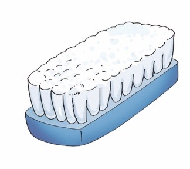
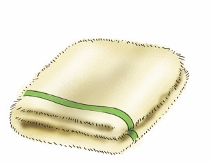
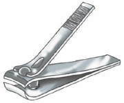
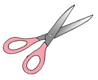

Ninasafisha mikono na kukata kucha zangu.
Paka wa katuni amesimama na kuinua mkono kana kwamba anaelekeza kuhusu usafi wa mikono na kucha.

Ninatumia vifaa hivi kusafisha mikono na kukata kucha zangu.
1
2

3

4
5
a
b

c

Swali
Taja majina ya vifaa ulivyoviona katika picha 1–5 / ulivyovibaini katika maelezo.